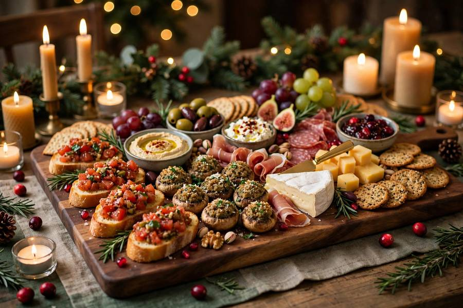
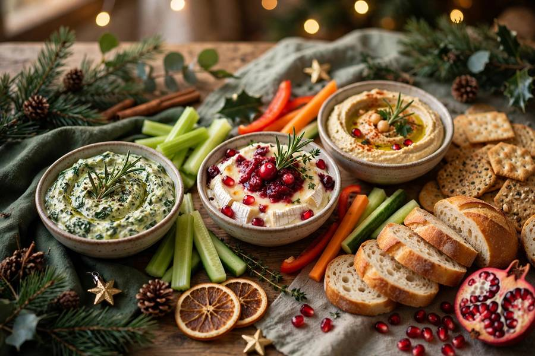

35+ Easy Christmas Appetizers for a Crowd
📌 Save to Pinterest
Christmas appetizers set the tone for the whole evening: guests gather around the table, graze, talk, and go back for seconds before dinner is even served. This roundup gathers thirty-five easy appetizers that work for a crowd — dips you can scoop, bites you can pick up with one hand, cheese boards that look like a centerpiece, and warm starters straight from the oven. Pick a few from each group, and the table takes care of itself.
How to plan appetizers for a crowd
Plan for variety, not volume: a dip, something on a stick, something cheesy, something warm, and something sweet covers every guest. Count on a few bites per person per hour, and make the food easy to reach — spread it across the table instead of crowding it in one spot. Keep cold food cold and hot food hot, put out small plates and napkins, and label anything with nuts or pork so guests with allergies can steer clear. Most of the appetizers below can be prepped ahead, so the host can enjoy the party too.
Good to know: Everything is written in American English, and measurements use US customary units — cups, tablespoons, and Fahrenheit — for cooks in the United States. Always follow safe food-handling guidance, and keep perishable appetizers refrigerated until serving time.
Dips & spreads
Dips are the easiest crowd appetizer there is: one bowl, a stack of crackers, and everyone helps themselves.
1. Classic Spinach & Artichoke Dip
Creamy, cheesy, and always the first bowl to empty. Serve it warm with tortilla chips, toasted baguette slices, or vegetable sticks for dipping.
2. Cranberry Brie Dip
Melted brie topped with cranberry sauce — sweet, tart, and rich all at once. It looks festive in a small baking dish and needs almost no work.
3. Whipped Feta with Honey & Herbs
Salty whipped feta drizzled with honey and scattered with fresh herbs. Serve with crostini or warm pita for a dip that tastes far fancier than it is.
4. Roasted Red Pepper Hummus
Smooth, smoky hummus with a sweet pepper flavor and a bright finish. A good pick for guests who want something lighter on the table.
5. Caramelized Onion Dip
Slow-cooked onions folded into a creamy base make a dip that tastes like the classic, only better. Serve with ridged potato chips or crusty bread.
6. Smoky Queso Dip
A warm cheese dip with a gentle smoky heat — the one guests hover around. Keep it warm in a small slow cooker so it stays smooth all evening.
7. Pomegranate Guacamole
Classic guacamole topped with pomegranate seeds for color and a tart crunch. The red and green make it look made for Christmas.

Bites on a stick
Skewers and one-bite starters are made for parties: no plates needed, no mess, and easy to count out for a crowd.
8. Caprese Skewers
Cherry tomatoes, mozzarella, and basil on a toothpick with a drizzle of balsamic. Fresh, bright, and the first thing to disappear from the tray.
9. Antipasto Skewers
Salami, cheese, olives, and roasted peppers stacked on a skewer — a whole antipasto plate in a single bite.
10. Cranberry & Brie Bites
Puff pastry cups filled with brie and cranberry sauce, baked until golden. Sweet, creamy, and sized for one perfect bite.
11. Prosciutto-Wrapped Dates
Sweet dates wrapped in salty prosciutto, with a nut tucked inside if you like. They bake in minutes and taste like something from a restaurant.
12. Bacon-Wrapped Dates
The classic party bite: smoky bacon around a sweet date, crisped in the oven. Make a double batch — they never last.
13. Shrimp Cocktail Shooters
Chilled shrimp with cocktail sauce served in small glasses. Elegant, easy to hold, and a refreshing change from the heavier bites.
14. Cucumber & Smoked Salmon Bites
Cool cucumber rounds topped with herbed cream cheese and smoked salmon. Light, pretty, and a good balance to the rich dishes on the table.
Cheese & charcuterie
A cheese board is both food and decoration — build it once, and it feeds the crowd for hours.
15. Christmas Cheese Board
A big board with a mix of cheeses, cured meats, crackers, fruit, and nuts, arranged with rosemary sprigs for a festive look. The board is the centerpiece.
16. Baked Brie en Croûte
Brie wrapped in puff pastry and baked until the outside is golden and the inside is molten. Serve with crackers and sliced apples.
17. Goat Cheese & Cranberry Log
A creamy goat cheese log rolled in dried cranberries and chopped nuts. Slice it at the table and serve with water crackers.
18. Classic Cheese Ball
The retro party favorite: a savory cheese ball rolled in nuts or herbs, served with crackers. It is easy to make ahead and always gets eaten.
19. Marinated Mozzarella & Tomatoes
Small mozzarella balls and cherry tomatoes marinated in olive oil, garlic, and herbs. Light, fresh, and a nice contrast to the richer boards.
20. Spiced Nuts Trio
Almonds, pecans, and cashews tossed with warm spices and a touch of sweetness. Fill small bowls around the table for grazing.
21. Fig & Prosciutto Crostini
Toasted baguette slices with fig spread, prosciutto, and a soft cheese. Sweet, salty, and elegant without any effort.
Warm & baked appetizers
Warm appetizers are the ones guests remember — the smell alone pulls people into the kitchen.
22. Sausage Rolls
Flaky pastry wrapped around seasoned sausage, baked until golden. Cut them small for a crowd and serve with mustard.
23. Mini Quiches
Tiny quiches with cheese, herbs, and vegetables in a crisp crust. They bake in batches and hold well on a warming tray.
24. Puff Pastry Pinwheels
Pastry rolled with pesto, cheese, or sun-dried tomato and sliced into spirals. They look impressive and take minutes to assemble.
25. Cranberry Meatballs
Small meatballs simmered in a cranberry glaze — sweet, savory, and made for a slow cooker. Toothpicks at the ready.
26. Spinach & Feta Triangles
Crisp phyllo triangles filled with spinach and feta. They are light, flaky, and easy to eat standing up.
27. Stuffed Mushrooms
Mushroom caps filled with a savory breadcrumb and cheese stuffing, baked until golden. A classic for a reason.
28. Bacon-Wrapped Smokies
Little sausages wrapped in bacon with a touch of brown sugar, baked until crisp. Sweet, smoky, and dangerously easy to keep eating.
Sweet & savory crowd-pleasers
These are the bites that blur the line between appetizer and dessert — and the ones guests ask about on the way home.
29. Cranberry & Brie Puff Bites
Golden puff pastry squares with melted brie and a spoonful of cranberry sauce. Festive, flaky, and gone in minutes.
30. Apple & Cheddar Bites
Crisp apple slices with sharp cheddar on a cracker, finished with a drizzle of honey. Sweet, salty, and crunchy in one bite.
31. Pear & Gorgonzola Crostini
Ripe pear and creamy gorgonzola on toasted bread with a few walnuts. An elegant bite that tastes like a cheese course.
32. Honey-Glazed Cocktail Sausages
Small sausages glazed with honey and mustard, kept warm in a slow cooker. The glaze is sweet, tangy, and sticky in the best way.
33. Maple-Glazed Bacon Bites
Thick-cut bacon brushed with maple and baked until crisp at the edges. Sweet, smoky, and impossible to stop at one.
34. Cinnamon-Spiced Pecans
Pecans tossed with cinnamon, sugar, and a pinch of salt, roasted until fragrant. Fill small bowls and scatter them around the room.
35. Chocolate-Dipped Pretzels
Crunchy pretzels dipped in chocolate and finished with sprinkles or crushed candy cane. Sweet, salty, and a hit with kids and adults alike.
What to serve with them
Appetizers need drinks more than they need more food: a festive punch or sparkling cider, a simple cocktail, and plenty of water. Around them, keep the table simple — a bowl of olives, a few extra crackers, and a small bowl of good mustard. If dinner follows, keep the appetizers light so guests still have room; if the appetizers ARE the party, add a soup or a salad and call it dinner. The best party table is one where the host is not stuck in the kitchen — so choose mostly make-ahead bites and one warm dish.
Make-ahead tips
Almost everything in this roundup can be prepped ahead: dips can be made the day before, cheese boards can be assembled in the morning, and skewers can be built a few hours ahead and kept cold. Bake the warm appetizers just before guests arrive, and keep them warm in a low oven or a slow cooker. Store leftovers in the refrigerator and use them within a few days; dips and cheese keep well, while pastry bites are best reheated in the oven so they crisp up again.
Keep exploring
- Browse the Appetizers & Snacks roundups — starters, party bites and snacks for every gathering.
- Browse all six categories — breakfast, lunch and dinner, desserts, air fryer, healthy recipes, and appetizers.
- More about the kitchen — what The Tasty Recipe Co is and how it works.
About the Editorial Team: This article was created by the editorial team behind The Tasty Recipe Co. The site publishes recipe roundups for home cooks, one at a time, with each article checked live before the next one begins. Learn more on our About page.
Recipe results can vary with ingredients, equipment, and technique. See our Disclaimer for food-safety and allergy notes.